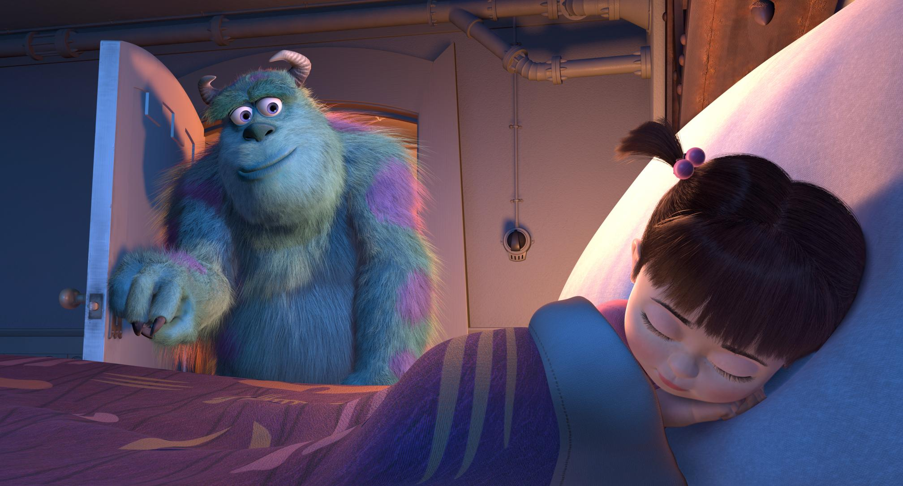

怪獸城市中住的全部都是怪獸居民，城市的供電由怪獸電力公司提供，電力的來源就是人類孩童的尖叫聲。這裡的「驚嚇專員」們將利用衣櫃門為媒介，在夜裡潛入人類孩子的臥室中嚇唬他們並收集他們的尖叫聲
由於怪獸們普遍相信，人類孩童周身都有劇毒，只要輕輕一下接觸就可以致其死命，所以驚嚇專員的工作也被認為非常危險。
蘇利文偶然發現藍道把一扇已經啟用的門留在驚嚇樓層，看起來是打算利用這扇門來獲得額外的驚嚇積分。誰料想，一個人類小女孩打開門進入了工廠，這可把蘇利文嚇壞了
他試著把小女孩送回去，而埋伏在此的藍道打算綁架阿布，卻錯綁了大眼仔。 阿布克服了自己的恐懼，幫助蘇利文打敗了藍道，兩怪將藍道扔進一扇門中並將門摔碎。
蘇利文和大眼仔與阿布告別，將她送回家中，然後阿布的門也在羅茲的命令下被粉碎了。蘇利文根據自己和阿布在一起的經歷，想出了挽救怪物城市能源危機的新方案。
怪獸電力公司的發電方式變了，如今怪獸們雖然一樣是在夜裡穿過衣櫃的門進入人類孩童的臥室，但他們其實是要去逗樂孩子，因為孩子們的歡笑聲中含有遠勝尖叫聲的能量，想出這方案的蘇利文成為了新任總裁，同時兩怪也登上了雜誌封面。
